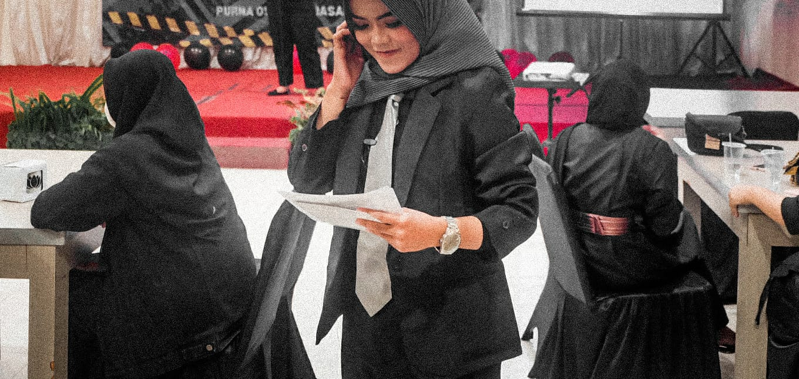

| My Biography | |
|---|---|
|  | |
| Name | Fauzizah Fitria Rizqi |
| Age | 21 Years |
| About Me |
My name is Fauzizah Fitria Rizqi. I am currently in my sixth semester of the Information Systems program at UPN "Veteran" Yogyakarta. The journey through my academic endeavors has been remarkably swift. Being a native of Yogyakarta, this city is more than just a place of study; it holds a significant place in shaping my identity. Throughout my studies, I've discovered immense satisfaction, particularly in engaging with various activities, most notably within the realm of organizations. A crucial aspect that has deepened my connection with these organizations is my active involvement as a committee member in event planning and execution. The process of conceptualizing, organizing, and collaborating with numerous individuals during events has been a source of joy for me. It goes beyond merely contributing to the success of an event, it has become a profound learning experience. Through these roles, I have honed valuable skills such as time management, effective communication, and leadership, skills that extend beyond the academic realm and into the broader aspects of life. |